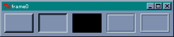
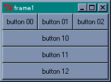
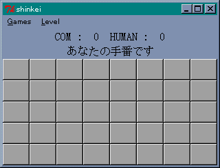

フレームウィジェット
フレームは、複数のウィジェットをひとまとめに格納する入れものとして使われるウィジェットです。単純なウィジェットですが、ジオメトリマネージャーと組み合わせることで、複雑なウィジェットの配置にも簡単に対応できる場合があります。
●コマンド frame
フレームウィジェットはコマンド frame で生成します。
frame ウィジェット名 オプション
オプションを指定する必要はほとんどありませんが、アプリケーションによっては形状や背景色を指定するといいでしょう。形状は -relief オプションで指定します。flat (平坦)、raised (出っぱり)、sunken (引っ込み)、groove (溝)、ridge (土手) の 5 種類が用意されています。デフォルトは flat です。次のプログラムを実行してみてください。
リスト : フレームの表示
foreach r {raised sunken flat groove ridge} {
frame .$r -width 60 -height 40 -relief $r -borderwidth 4
pack .$r -padx 5 -pady 5 -side left
}
.flat configure -bg black
これは 5 つの形状をすべて表示するプログラムです。オプション -borderwidth は枠の幅を指定します。たとえばレリーフが raised の場合、枠の上辺と左辺を背景よりも明るい色で、枠の下辺と右辺を暗い色で描くことにより、フレームがウィンドウから出っ張っているように見えます。-borderwidth の値を増やすと、この幅が増えるのでフレームはより出っ張って見えるようになります。実際に値を変えて試してみてください。
pack のオプション -padx と -pady は、ウィジェットの周囲に設定する余白の長さを指定します。これが大きいとウィジェットの間隔が開くことになります。レリーフを flat にすると背景と区別できなくなるので、-bg で背景色を変更しています。
 フレームの形状●ウィジェットの配置
フレームにウィジェットを配置するにはふたつの方法があります。ひとつはウィジェット名で指定する方法です。フレーム名を .f0 とすると、そこにウィジェットを作る場合は .f0 の後ろにウィジェットの名前を書きます。もうひとつは、ジオメトリマネージャーの -in オプションを使う方法です。
それでは簡単な例題として、ボタンを 3 つ横に並べて、その下にボタンを縦に 3 つ配置するプログラムを作ってみます。もちろん、Gridder を使ってもプログラムできますが、ふたつのフレームと Packer を用いることで簡単に実現できます。横に並べるボタンをフレーム .f0 に配置し、縦に並べるボタンをフレーム .f1 に配置します。プログラムは次のようになります。
リスト : フレームにボタンを配置する # フレームの生成 frame .f0 frame .f1 # フレーム .f0 にボタンを配置 button .f0.b0 -text "button 00" button .f0.b1 -text "button 01" button .f0.b2 -text "button 02" pack .f0.b0 .f0.b1 .f0.b2 -side left # フレーム .f1 にボタンを配置 button .b0 -text "button 10" button .b1 -text "button 11" button .b2 -text "button 12" pack .b0 .b1 .b2 -in .f1 -fill both # フレームを配置する pack .f0 .f1 -fill both
フレーム .f0 には、ウィジェット名でボタンを配置します。ボタンの名前を .f0.b0 とすることで、このボタンを pack するとフレーム .f0 に配置されます。この段階ではフレームにボタンを詰め込んだだけなので、まだウィンドウには表示されません。ウィンドウにフレームを配置しないとボタンは表示されないのです。
フレーム .f1 には、-in オプションを使ってボタンを配置します。.b0 のようにボタン名の先頭にフレーム名は付いていませんが、pack の -in オプションにより、このボタンはフレーム .f1 に配置されます。このオプションは grid でも使用することができます。ただし、.f1 に配置されるからといって、ボタン名がたとえば .f1.b0 になるのではありません。名前は .b0 のままでアクセスすることができます。-in オプションを使うと、ウィジェット名が長くならないので便利です。
最後にフレーム .f0 と .f1 を pack で配置します。これでボタンが表示されます。それから、縦に配置したボタンを引き伸ばすため、-fill オプションを指定します。この場合、ボタンをフレームに配置するときと、フレームをウィンドウに配置するときの 2 か所で指定する必要があります。片方だけではボタンを引き伸ばすことはできません。ご注意くださいませ。
 フレームを使ってボタンを配置するリスト操作
リスト (list) は、連想配列と同様に複数のデータを格納することができますが、連想配列と違って要素を順番に並べただけのデータ構造です。リストというと Lisp というプログラミング言語が有名ですが、ほかのプログラミング言語ユーザーの方にはあまり馴染みがないかもしれません。もちろん、Ｃ言語や Pascal でもリストを作成することはできますし、Ｃ++ の標準ライブラリ (STL) でも双方向リストですがサポートされています。Tcl/Tk は標準でリストをサポートしていて、それを操作するコマンドが用意されています。
●簡単なリスト操作
リストから要素を取り出すには、コマンド lindex を使います。
lindex リスト 位置
Tcl/Tk の場合、リストの先頭の要素を 0 番目として指定します。これは Common Lisp と同じ指定方法です。簡単な例を示しましょう。
% set a {10 20 30 40 50}
10 20 30 40 50
% lindex $a 0
10
% lindex $a 4
50
% lindex $a 5
% <== 空文字列
指定した位置がリストの範囲を超えた場合は空文字列を返します。リストが入れ子になっている場合は、そのリストをひとつの要素として数えます。
% set b {10 20 {30 40} 50}
10 20 {30 40} 50
% lindex $b 2
30 40
2 番目の要素は {30 40} というリストです。リストの中の 30 が 2 番目の要素ではありません。このように、リストは階層構造を作ることができます。とくに、いちばん上の階層を「トップレベル」といいます。そして lindex のような働きを、「トップレベルの要素に対して働く」と表現します。これは Lisp でよく使われる用語です。
リストにデータを挿入するには、コマンド linsert を使います。
linsert リスト 位置 データ ...
指定した位置の直前にデータを挿入します。データは複数個指定することができます。
% set a {10 20 30 40 50}
10 20 30 40 50
% linsert $a 0 a b c
a b c 10 20 30 40 50
% linsert $a 2 d e
10 20 d e 30 40 50
% linsert $a end e n d
10 20 30 40 50 e n d
位置が 0 の場合、リストの先頭にデータが挿入されます。位置に end を指定すると、リストの最後尾にデータが挿入されます。
コマンド llength は、リストの中の要素の個数を返します。これを「リストの長さ」といいます。
llength リスト
llength はトップレベルの要素に対して働くことに注意してください。簡単な例を示しましょう。
% set a {10 20 30 40 50}
10 20 30 40 50
% set b {10 20 {30 40} 50}
10 20 {30 40} 50
% llength $a
5
% llength $b
4
リストが入れ子になっている場合、llenght はそのリストをひとつの要素として数えます。つまり、要素がリストの場合でも、その中の要素は数えないのです。したがって、変数 b のリストの長さは 4 となります。
●リストの生成
リストを新しく生成するコマンドには concat と list があります。concat は複数のリストを受け取り、それらのリストの要素を結合してひとつのリストを作ります。
% concat {1 2 3} 4 {5 6 7}
1 2 3 4 5 6 7
% concat 1 2 {3 4} {5 {6 7} 8} 9
1 2 3 4 5 {6 7} 8 9
リストが入れ子になっている場合は、それをひとつの要素として扱います。したがって、{6 7} はリストとしてそのまま結合されます。
list は引数をそのまま結合して、それらが要素となるリストを作成します。
% list {1 2 3} 4 {5 6 7}
{1 2 3} 4 {5 6 7}
このように、list で作成したリストは、要素数が引数の数と同じ 3 となります。
●リストの修正
リストから要素を削除する、もしくは、ほかのデータに置き換える場合は、コマンド lreplace を使います。
lreplace リスト first last データ ...
lreplace はリストの first 番目から last 番目の要素を削除し、データをその位置に挿入します。データが無い場合は、要素を削除したリストを返します。
% lreplace {10 20 30 40 50 60} 2 4
10 20 60
% lreplace {10 20 30 40 50 60} 3 3
10 20 30 50 60
% lreplace {10 20 30 40 50 60} 1 3 a b c
10 a b c 50 60
first と last を同じ位置にすれば、その位置の要素を削除することができます。
●リストの検索
リストの中からデータを検索するにはコマンド lsearch を使います。
lsearch [オプション] リスト パターン
lsearch はパターンと一致する最初の要素の位置を返します。一致する要素が見つからない場合は -1 を返します。lsearch はパターンと要素を文字列として比較します。オプションはパターンマッチングの方法を指定します。
- -exact
単純な文字列として比較する - -glob
glob 形式による比較 - -regexp
正規表現による比較
オプションに -exact を指定した場合の例を示します。
% lsearch -exact {10 20 30 40 50} 30
2
% lsearch -exact {10 20 30 40 50} 0
-1
●globbing と正規表現
オプションのデフォルトは -glob です。glob 形式とは、UNIX のシェルなどでファイル名を求めるときに使用するパターンのことです。Windows (MS-DOS) では、ワイルドカード (*, ?) を使ってファイルを指定することができますが、UNIX では特殊文字 (メタ文字)、たとえば ? * [ ] { } などを含むパターンを使ってファイルを指定することができます。そして、パターンから実際のファイル名を求める処理 (ファイル名の展開) を glob とか globbing と呼びます。使用できるメタ文字はシェルによって異なります。
UNIX の場合、ファイル名の展開はシェルが行うので、アプリケーション側ではファイル名を受け取るだけで済みます。ところが MS-DOS の場合、シェル (command.com) は引数をそのまま渡すだけので、アプリケーション側でファイル名の展開を行う必要があります。
Tcl には、glob というファイル名の展開を行うコマンドが用意されています。使用できるメタ文字は glob を使うときに詳しく説明しましょう。
正規表現 (regular expression) は、UNIX 系のツール (grep, sed, awk, Perl) でよく使われる、「文字列のパターンを示した式」のことです。正規表現を使うと、複雑な文字列も簡単に表すことができますが、初心者にとっては摩訶不思議な呪文に見えてしまうでしょう。Tcl でも、正規表現による文字列処理をサポートしていますが、今回は説明を割愛いたします。テキストファイルを加工するだけならば、awk や Perl の方が便利だと思います。
●リストのソート
リストの要素をある順番に並べるコマンドが lsort です。
lsort [オプション] リスト
lsort はリストの要素を文字列として比較し、昇順で整列したリストを返します。オプション -integer は要素を整数として比較し、-real は実数として比較します。また、-decreasing を指定すると降順に整列します。
それでは簡単な使用例を示しましょう。
% lsort {def xyz abc}
abc def xyz
% lsort -integer -decreasing {10 60 30 20 40}
60 40 30 20 10
●文字列とリストの変換
Tcl には、文字列とリストの変換を行うコマンド split と join が用意されています。split は文字列を分解し、それをリストに格納して返します。
split 文字列 区切り文字
split は区切り文字で囲まれた部分文字列を取り出し、それを要素とするリストを生成します。区切り文字自体は部分文字列には含まれません。簡単な使用例を示しましょう。
% split "99/07/07" /
99 07 07
% split "99/07/07 12:00:00" "/: "
99 07 07 12 00 00
% split "99///07" /
99 {} {} 07
% split abcdefg ""
a b c d e f g
最初の例はスラッシュで文字列を分解しています。区切り文字は複数指定することができます。2 番目の例では、/ と : と空白文字を指定し、部分文字列に切り分けています。3 番目の例のように、区切り文字が連続すると空リストが生成されます。最後の例のように、区切り文字に空文字列を指定すると、文字列を文字に分解することができます。
split とは逆に、リストの要素をつないで文字列にするコマンドが join です。
join リスト 文字
join はリストの要素間に指定した文字を挿入して、ひとつの文字列を生成します。文字が省略されると空白が挿入されます。
% join {99 07 07} /
99/07/07
% join {a b c d e f g} ""
abcdefg
文字を複数指定すると、指定した文字すべてが挿入されます。空文字列を指定すると、要素の間に文字は挿入されません。
●others
このほかにも、リストから部分リストを切り出す lrange や、リストを結合する lappend といった便利なコマンドが用意されています。詳細はヘルプを参照してください。
神経衰弱ゲーム
今回は簡単な例題として、ボタンを使った神経衰弱ゲームを作りましょう。10 色のボタンを 4 つずつ、合計 40 個のボタンを用意します。ひとりでプレイしても面白くないでしょうから、コンピュータを相手にボタンを取り合うことにします。ここで問題になるのが、コンピュータ側のボタン選択処理です。色が判明したボタンをすべて記憶しておくことは、コンピュータにとって朝飯前のことですが、私達に勝ち目が無くなってしまいます。かといって、ランダムにボタンを選ぶようでは、コンピュータが弱すぎるので面白くありません。
そこで、コンピュータの記憶力を制限することにします。Level 1 では 4 個、Level 2 では 6 個、Level 3では 8 個までとします。もし、Level 1 でも歯が立たないのであれば、個数をもっと少なくすればいいでしょう。逆に、Level 3 でも楽勝ならば、Level 4 や 5 を作ってみてください。
●ボタンの配置
ボタンは 5 行 8 列に並べ、その色を配列 board に格納します。コンピュータ側は、色が判明したボタンの位置だけを記憶し、色は board から求めることにします。board は 1 次元配列とします。2 次元配列にすると位置を表すのに 2 個の数字が必要になりますが、1 次元配列だと 1 個の数値ですむのでプログラムも簡単になります。
ボタンの配置は Gridder を使った方が簡単です。スコア表示用のラベルは Packer で十分です。このようなとき、配置するウィジェットをフレームに分けることで、異なるジオメトリマネージャーを使うことができます。「Gridder だけで十分ではないか」と思われるでしょうが、フレームを使う利点がもうひとつあるのです。
このゲームでは、取ったボタンを画面から取り除かないといけません。Tcl/Tk では、コマンド destory を使ってウィジェットを消去することができますが、これでは再ゲームのときにボタンを作り直さないといけません。そこで、ボタンを画面から隠すことにします。このとき、フレームが役に立つのです。
入門編でも説明しましたが、上にあるウィンドウが下のウィンドウを覆い隠すように、ウィジェットにも重なり順があります。Tcl/Tk の場合、あとから作成したウィジェットが上になります。フレームウィジェットを作っておいて、ボタンとの重なり順を調整することで、ボタンをフレームの下に隠したり、出したりすることができます。これはコマンド raise と lower を使えば簡単にできます。
それではラベルとボタンから作りましょう。
リスト : ラベルとボタンの配置
# フォントの指定
option add *font "{ＭＳ 明朝} 12"
# ラベルの作成
frame .f0
label .f0.l0 -textvariable buffer0
label .f0.l1 -textvariable buffer1
pack .f0.l0 .f0.l1
# ボタンの作成
frame .f1
set i 0
for {set y 0} {$y < 5} {incr y} {
for {set x 0} {$x < 8} {incr x} {
button .b$i -text " " -command "select_button_human $i" -bg darkgray
grid .b$i -in .f1 -column $x -row $y
incr i
}
}
pack .f0 .f1
ラベルはフレーム .f0 に配置します。このゲームでは、取ったボタンの個数を表示するラベルを .f0.l0 とし、ゲーム進行などのメッセージを表示するラベルを .f0.l1 としました。ボタンはフレーム .f1 に作成します。ボタン名は .b$i で指定していますが、grid の -in オプションにより、このボタンはフレーム .f1 に配置されます。この段階では、フレームにウィジェットを詰め込んだだけなので、ウィンドウには表示されません。
ボタンは格子状に配置されますが、0 から 39 までの番号で区別することができます。この番号が配列 board の添字に対応します。ボタンを押したときに実行されるコマンドが select_button_human です。バインドされるときは $i が変数展開されるので、押したボタンの番号が引数として渡されます。この番号を使って、ボタンの背景色を board に格納されている色に変更します。あとは pack でフレーム .f0 と .f1 をウィンドウに詰め込みます。これでボタンとラベルが表示されます。
 ボタンとラベルの配置●ボタンの選択処理
次は、コンピュータのボタン選択処理を作りましょう。まず、ボタンの位置を記憶する処理ですが、配列を使わないでリストに格納します。色が判明したボタンの位置はリストに格納し、大域変数 memory にセットします。ボタンを選ぶときは、リストの中から同じ色のボタンを一組選びます。見つからない場合は、しょうがないのでランダムにボタンを選びます。
記憶力の制限ですが、ボタンの位置を記憶するときにリストの長さをチェックすればいいでしょう。制限値いっぱいであれば、ボタンの位置はリストに格納しません。そうでなければ、ボタンの位置をリストに格納します。それから、ボタンが取られたらリストから削除する処理が必要になります。
まず、ボタンの位置を記憶する処理から作ります。プログラムは次のようになります。
リスト : ボタンの位置を記憶
proc write_memory {n} {
global memory level
if {[llength $memory] < $level &&
[lsearch -exact $memory $n] == -1} {
set memory [concat $memory $n]
}
}
大域変数 level は、記憶できるボタンの最大値を格納しています。これはメニューで値を変更することができます。同じ位置を重複して記憶しないように、lsearch で同じ値が無いことを確認しています。あとは concat を使って、データをリストに格納します。
次は memory からデータを削除する処理です。
リスト : ボタンの位置を削除
proc delete_memory {n} {
global memory
set i [lsearch -exact $memory $n]
if {$i >= 0} {
set memory [lreplace $memory $i $i]
}
}
これも簡単です。まず、リストの中から削除するデータを lsearch で探します。見つかれば、lreplace を使ってデータを削除します。データはひとつなので、削除の開始位置と終了位置は同じ値となります。
今度は、memory の中から同じ色のボタンを一組探す処理を作ります。この処理は「再帰呼び出し」を使うと簡単にプログラムできます。といっても、再帰嫌いの方もいるでしょうし、Tcl で再帰を詳しく説明するのも面倒なので、繰り返しを使うことにします。再帰に興味のある方は、拙作のプログラミング講座を参照してください。プログラムは次のようになります。
リスト : ボタンの探索
proc select_same_button {} {
global memory board color_list
foreach c $color_list {
set position($c) -1
}
foreach n $memory {
set c $board($n)
if {$position($c) == -1} {
set position($c) $n
} else {
return [concat $position($c) $n]
}
}
return
}
まず、配列 position を初期化します。大域変数 color_list は、使用する色の名前を格納しています。Tcl は連想配列なので、添字に文字列を使っても大丈夫です。
次に、memory に格納されているデータを取り出して、色を board から求めます。もし、position($n) が -1 であれば、その色は初めてなので、データを position にセットします。そうでなければ、前に同じ色のデータがあるのですから、同じ色のボタンが一組見つかったことになります。2 つのデータをリストに格納して返します。このように、リストを使えば複数のデータを返すことも簡単にできます。
それでは、ボタン選択処理の本体を作りましょう。プログラムは次のようになります。
リスト : ボタンの選択
proc select_button_com {} {
global board count turn
while 1 {
set result [select_same_button]
if {[llength $result] > 0} {
push_button [lindex $result 0]
push_button [lindex $result 1]
} elseif {[select_button_random] == 0} {
set turn 0
print_message "あなたの手番です"
return
}
incr count(com) 2
if {[expr $count(com) + $count(human)] == 40} {
game_over
return
}
}
}
大域変数 turn は手番を管理するために使います。人間の手番を 0 で、コンピュータの手番を 1 で表しています。count は取ったボタンの個数をカウントする配列です。
処理の流れは簡単に理解できるでしょう。while は無限ループになっていますが、コンピュータがボタンを取るのに失敗したら return で終了するので問題ありません。まず、select_same_button で memory から同じ色のボタンを一組探します。見つかれば、push_button でボタンを表示して取り除きます。push_button はあとで説明します。
同じ色のボタンが見つからない場合は、select_button_random を呼び出して、ボタンをランダムに決定します。実際には単純なランダムではなく、ボタンをひとつ選んだら、それと同じ色のボタンが memory にないか検索しています。ボタンを取れなかったら 0 を返すので、手番を相手に移します。ボタンを取ることができたら、count(com) の値を増やします。ボタンがなくなったらゲーム終了です。
●ボタンの表示処理
ボタンを押したときの処理は push_button で行います。最初の選択であれば、選択したボタンを大域変数 number に格納します。2 回目であれば数字を比較し、同じ数字であればボタンを取り除き、そうでなければ、ボタンを元の状態に戻します。それではプログラムを見てください。
リスト : ボタンの選択
proc push_button {i} {
global board number
.b$i configure -bg $board($i)
update
after 500
set result 0
if {$number >= 0} {
if {$board($number) == $board($i)} {
get_button $i $number
set result 2
} else {
write_memory $i
write_memory $number
}
.b$i configure -bg darkgray
.b$number configure -bg darkgray
set number -1
} else {
set number $i
set result 1
}
return $result
}
ボタンを押したあと、しばらく表示させるため after を使って 500 msec 待っています。ところが実際に試してみると、ボタンがへこんだまま 500 msec が経過し、色の表示が一瞬で終わってしまうのです。これは、マウスの左ボタンを押したときに push_button が実行されるため、マウスの左ボタンを離したときの処理がまだ実行されていないからです。
これを回避するために update を使います。このコマンドはすべての待ちイベントを受け付け、実行すべきコマンドを処理します。これによってマウスの左ボタンを離したときの処理が実行され、ボタンが元に戻るので色がきちんと表示されます。number が 0 以上であれば、ボタンの色を比較します。同じ色であればボタンを取り除きます。これは get_button で行います。この中で memory からの削除も行っています。違う色であれば、その位置を memory に記憶し、ボタンの表示を元に戻します。
あとは、特に難しいところはないでしょう。詳細はプログラムリストを読んでください。
 失敗！
失敗！